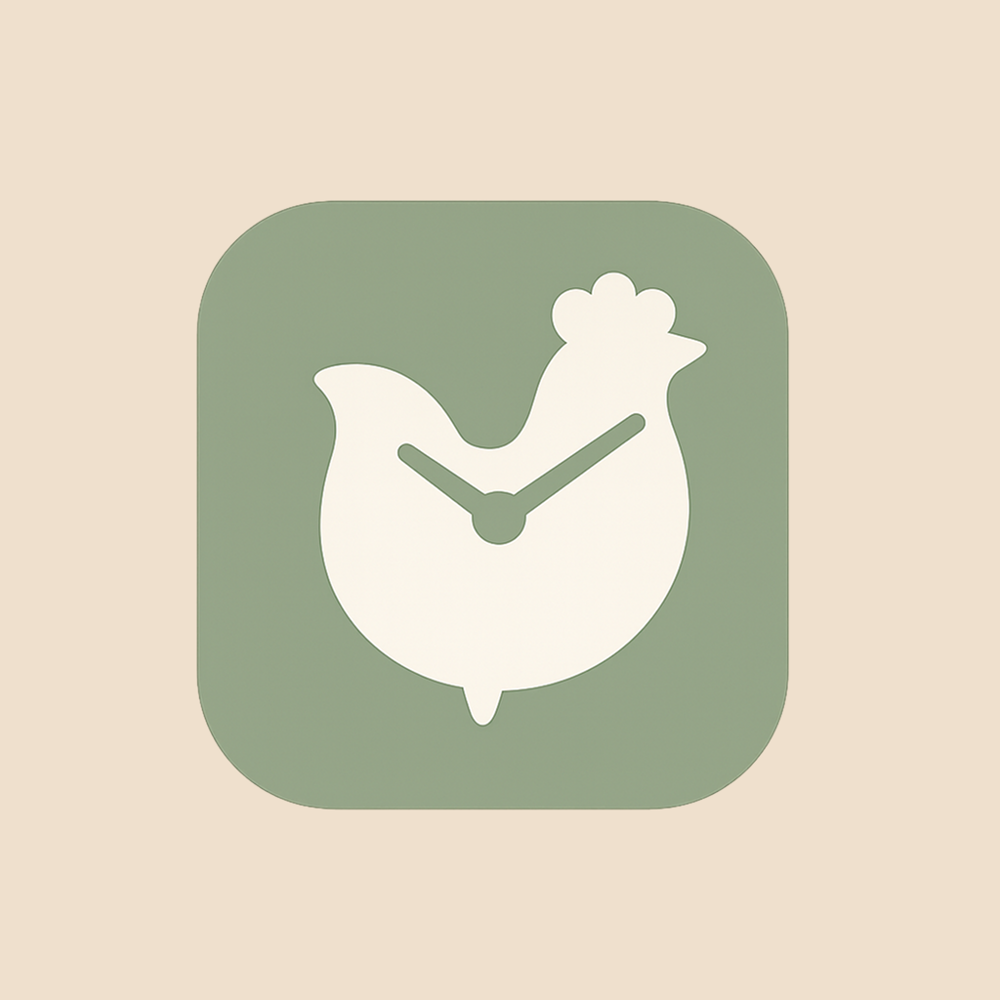
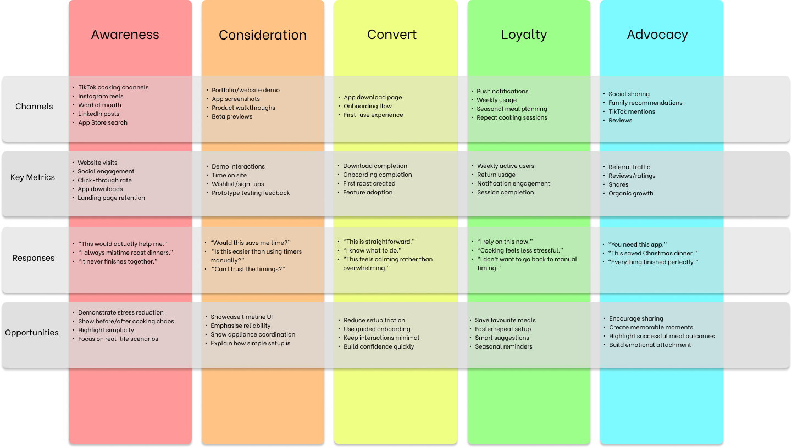
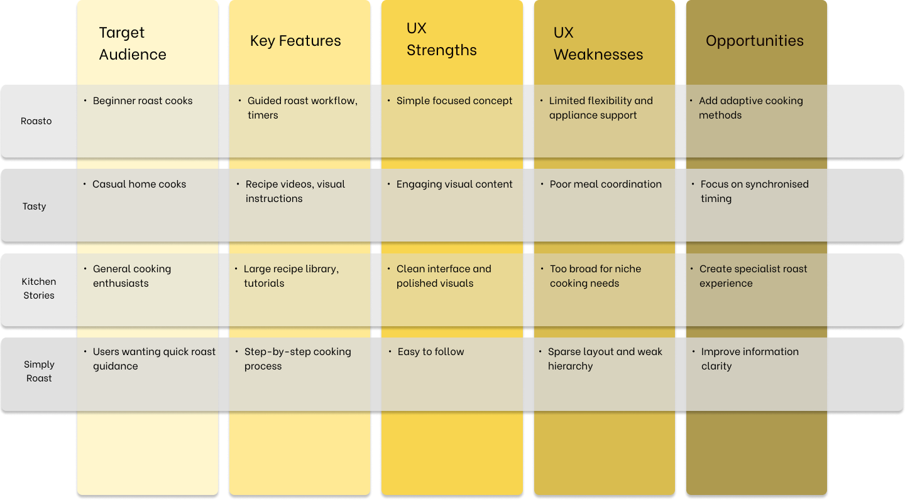
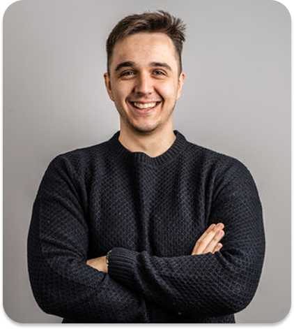
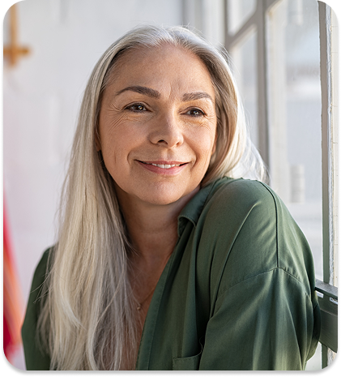

Users did not need more recipes
What they were missing was a sense of control. The hardest part was not deciding what to cook, but knowing what needed to happen next.
UX / Product Design
A mobile app concept for people who want a roast on the table without spending the whole afternoon second-guessing the timings.
This project started with something my family used to laugh at: every Christmas my Dad opened an Excel sheet to time the turkey. The spreadsheet looked a bit odd, but it worked. All he needed was a serving time, and it would map the cook backwards so every step had a place.
When friends started asking for copies, it stopped feeling like a family quirk and started feeling like a design opportunity. Roost came from that moment. I wanted to see whether the logic of that spreadsheet could become a calmer, more usable experience for people trying to cook a full roast without the usual stress.

Overview
Roost is not really about teaching people how to cook. It is about helping them hold everything together once the kitchen gets busy. The more I looked at roast cooking, the clearer that became. The recipes were only one part of it. The real stress came from juggling timings, appliances, ingredients, and serving expectations all at once.
That was the opportunity behind the project: take something surprisingly effective but clunky, and turn it into a calmer planning tool for people who want reassurance as much as instruction.
Problem
Most cooking products are good at helping people choose what to make. Far fewer help them coordinate a whole meal that needs to land together. When someone is making a roast, the pressure usually comes from overlap. Potatoes need attention while vegetables are boiling, the meat still needs timing, the oven is full, and guests are waiting.
For less experienced cooks especially, that mental load can turn a social meal into a fairly tense one. Roost was designed around that pressure point rather than around recipe discovery.
Research
I conducted user interviews with people aged 25 to 70 and reviewed existing recipe apps and roast-timing tools. Everyone I spoke to had experienced some level of stress around making a roast, but the pressure was most visible in the 25 to 40 age group. Older participants still recognised the problem, though many had built their own routines over time.
One especially interesting tension came up again and again: people already used phones and apps while cooking, but they did not always feel helped by them. Technology was often part of the process and part of the problem at the same time.
| Research finding | Result |
|---|---|
| Users who experienced stress while making a roast | 5 out of 5 |
| Users who regularly used technology or apps while cooking | 4 out of 5 |
| Users who said technology had increased their stress while cooking | 5 out of 5 |
| Users who had ruined or wasted food because timings slipped | 3 out of 5 |

Competitor analysis
Competitor analysis helped position Roost between two familiar categories. On one side were broad recipe platforms with plenty of inspiration but little help once cooking actually began. On the other were simple roast calculators and timers that solved one narrow problem but lacked the clarity and reassurance people seemed to want.
The opportunity was to create something more focused: a planning companion for a specific, high-stress meal, with just enough structure to reduce the feeling of chaos.

Insights
What they were missing was a sense of control. The hardest part was not deciding what to cook, but knowing what needed to happen next.
Participants in the 25 to 40 range were more likely to rely on their phones and more likely to feel overloaded when timings started colliding.
If the interface felt busy, it risked adding to the stress. That pushed the concept towards quieter screens, fewer decisions at once, and clearer sequencing.
[Add a direct interview quote here if you have one. A real line from a participant would make this section feel even more personal.]
Personas
To keep the concept grounded, I used two personas who approached roast cooking from very different places. One needed reassurance and structure. The other needed support without feeling managed.

Beginner cook / digitally confident
Jamie is completely comfortable with apps, but not with cooking a full roast. Once several dishes overlap, he starts second-guessing himself. He needs a plan he can trust and an interface that does not throw too much at him at once.

Regular home cook / values clarity
Liz cooks more often and does not need hand-holding, but she still appreciates a clean timeline when the kitchen gets busy. She wants something supportive and well structured, not something that feels fussy or over-designed.
Ideation
The concept really clicked once I stopped treating it like a recipe app and started treating it like a scheduling problem. From there, the core flow became straightforward: the user chooses a serving time, adds the main elements of the meal, notes the appliances they have available, and receives a timeline that spaces the work out in a way that feels manageable.
I wanted the setup to feel deliberate but not heavy. The app should do the organising quietly in the background, then surface the next useful piece of information at the right moment.
Solution
The final concept is intentionally simple. Users enter when they want to eat, add produce and appliances, and receive a cooking timeline that helps them pace the roast from start to finish. A future cooking mode would keep the interface even lighter by showing only the most relevant information for the current moment, followed by the next step when needed.
That direction came straight from the research. People did not ask for more content. They wanted less scrambling and more reassurance.
Branding
I want the branding to support the same feeling as the product itself: calm, capable, and homey without becoming overly rustic or overly polished. The direction is intentionally warm and minimal, but this part of the project still needs a more resolved system before it feels finished.
Reflection
Testing the idea was encouraging. All five users said an app like this would help reduce some of the stress around making a roast. Three also asked about in-app timers, which was useful because it showed exactly where people expected the concept to go next.
If I carried the project further, I would focus on timer behaviour, late-stage adjustments, and what happens when the user falls behind. That is where a product like this either earns trust or loses it.
| Validation | What it suggested |
|---|---|
| 5 out of 5 users said the app would help reduce roast-related stress | The core idea feels useful rather than gimmicky. |
| 3 out of 5 users specifically asked about in-app timers | Users already imagine the product supporting them during the live cook, not just during setup. |
Closing thought
Roost is strongest when it stays focused. It does not need to become the biggest cooking app in the kitchen. It just needs to be the one that makes a roast feel manageable.